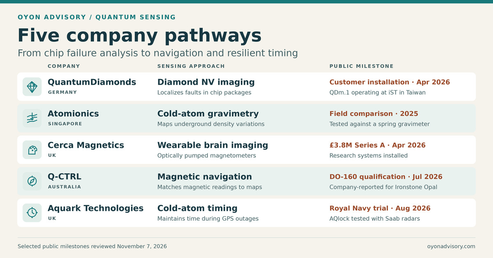

Back to Research & Perspectives
Quantum Sensing — Five Company Pathways
A short circuit inside a stacked chip package can be hard to locate without opening it. But the current flowing through the fault leaves a magnetic signature. A diamond sensor can map that field and help an engineer decide where to look. The same idea takes a different form in a gravity survey, where the motion of laser-cooled atoms can reveal changes in the density of rock underground. [3] [5]


Where the technologies fit
A quantum sensor turns a small physical effect into a readable change in an atom, spin, or other quantum system. In a diamond magnetometer, a magnetic field shifts the resonance of an electron spin. In a cold-atom gravimeter, gravity changes the phase of falling matter waves. In an atomic clock, a stable atomic transition provides a frequency reference. The engineering challenge is different in each case. A microscope needs to resolve a buried current path, a gravimeter has to work around vibration, and a clock has to keep accurate time through an outage. [1] [2] [5] [11]
Five companies and their recent milestones
1. QuantumDiamonds · Germany · Semiconductor failure analysis
QuantumDiamonds uses nitrogen–vacancy centers in diamond to image magnetic fields generated by current inside a chip package. In April 2026, it announced deployment of its QDm.1 system at iST’s failure-analysis lab in Hsinchu, Taiwan. In July, it announced €15 million in equity and €76 million in non-dilutive funding to scale production. The installation puts the tool into a customer workflow where diagnosis time and fault-localization accuracy can be compared with existing methods. [3] [4]
2. Atomionics · Singapore · Subsurface surveying
Atomionics uses cold-atom gravimetry to map density variations underground. A 2025 field report from Core Lithium compared its Gravio system with a conventional spring gravimeter in Australia and documented operational limits. BHP Ventures separately confirmed a strategic investment. The field comparison gives survey teams a baseline for judging coverage, measurement speed, and cost. [5] [6]
3. Cerca Magnetics · UK · Wearable brain imaging
Cerca builds wearable magnetoencephalography systems using optically pumped magnetometers. The sensors sit close to the scalp and measure the weak magnetic fields generated by brain activity. Cerca has installed research systems and announced a £3.8 million Series A in April 2026. A separate UK program is preparing to evaluate the technology in NHS epilepsy care. Research installations and clinical evaluation answer different questions about adoption. [7] [8] [9]
4. Q-CTRL · Australia · Navigation when GPS is unavailable
Q-CTRL’s Ironstone Opal uses magnetic measurements and maps to help estimate position when GPS is unavailable. In July 2026, the company reported DO-160 safety-of-flight qualification. That moves the equipment beyond a field demonstration. Performance on unfamiliar routes and deployment across a fleet are separate milestones. [10]
5. Aquark Technologies · UK · Resilient timing
Aquark’s AQlock uses cold atoms as a timing reference. In August 2026, the Royal Navy reported testing the clock with Saab’s Giraffe 1X radar systems. The trial put the clock into an operationally relevant network. The next question is how accurately the network can stay synchronized through a prolonged GPS outage. [11]
What these milestones tell us
A customer installation puts an instrument into someone else’s workflow. A side-by-side field trial tests it against the tool already in use. An equipment qualification shows that it passed a defined set of tests. Each is evidence of progress, and each leaves a different question open. [3] [5] [10]
For quantum sensing, the commercial test is whether the measurement improves a decision enough to justify the instrument and the work of integrating it. Can a chip engineer find the fault faster? Can a survey team choose a better drilling target? Can a radar network stay synchronized for the required outage? Those are the results a customer can measure and pay for.
Selected public sources
- NIST — Nitrogen-vacancy center magnetometry
- Kasevich and Chu — Measurement of g with an atom interferometer
- British Institute of Non-Destructive Testing — QDm.1 deployment at iST
- QuantumDiamonds — July 2026 equity and non-dilutive funding announcement
- Core Lithium — Field evaluation of Gravio at Ringing Rocks, Northern Territory
- BHP Ventures — Strategic investment in Atomionics
- Cerca Magnetics — OPM-MEG research installation at SickKids
- Cerca Magnetics — April 2026 Series A and company milestones
- Epilepsy Research Institute — OPM-MEG Site Implementation Competition
- Q-CTRL — Ironstone Opal safety-of-flight qualification announcement
- Royal Navy — AQlock trial with Saab radar systems